THE RESEARCH
YOU SHOULDN'T
RUN alone
How agents became my research team.
// LIVE AGENTS RUNNING · 2026
The Evolution of AI Workflow

Chat

Knowledge base

Skill

Skill + connectors

Agent
Chat
Knowledge base
Skill
Skill + connectors
Agent
I'm Hani Buskila
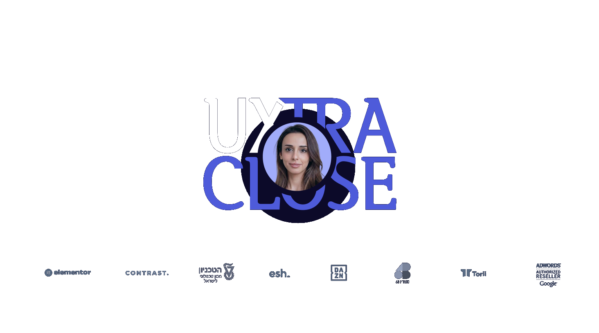
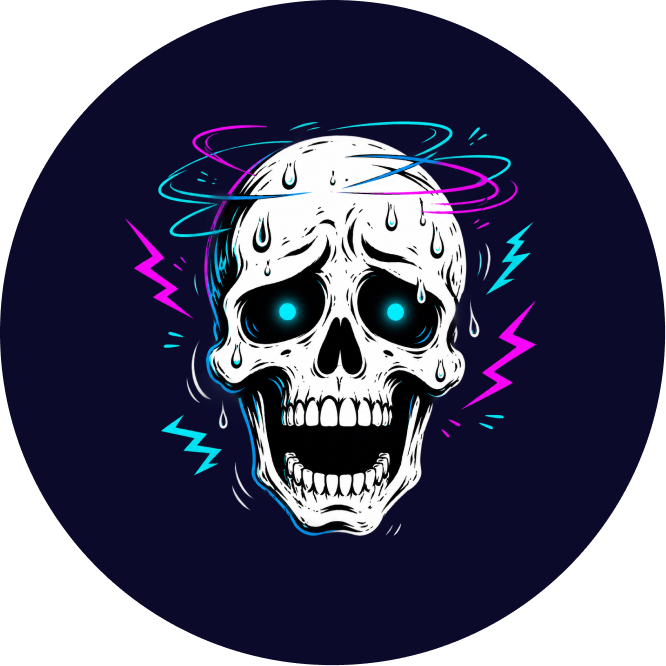
CHALLENGES
VISION
PERSONA
JOBS TO BE DONE
UI HACKING
USER JOURNEY MAP
SKETCHING
YOUR METHOD. every single time.
YOUR METHOD. every single time.
01
USER RESEARCH
personas, interviews, journey maps
02
INFORMATION ARCHITECTURE
structure, navigation, taxonomy
03
COMPETITIVE ANALYSIS
benchmark rivals, find the gaps
04
DESIGN PRINCIPLES
the rules that resolve trade-offs
05
COLOR SYSTEM
palette, semantics, contrast
06
TYPOGRAPHY SCALE
modular type, hierarchy
07
LAYOUT & GRID
responsive structure
08
VISUAL HIERARCHY
what the eye reads first
09
INTERACTION & MOTION
states, gestures, feedback
10
LOADING & EMPTY STATES
the graceful in-betweens
11
HEURISTIC EVALUATION
Nielsen's 10 heuristics
12
USABILITY TESTING
test plans, scenarios, tasks
13
A/B EXPERIMENTS
hypotheses, metrics, power
14
UX WRITING
microcopy, errors, empty states
15
DESIGN SYSTEMS
tokens, components, theming
16
ACCESSIBILITY
WCAG, contrast, screen readers
17
RESPONSIVE DESIGN
breakpoints, fluid layouts
18
DARK MODE
elevation, adapted contrast
19
DATA VISUALIZATION
chart choice, clarity
20
ICONOGRAPHY
a consistent visual language
21
SPACING SYSTEM
rhythm from a base unit
22
PROTOTYPING
fidelity, flows, fast tests
23
DESIGN HANDOFF
specs, tokens, code-ready
24
STAKEHOLDER ALIGNMENT
decisions, buy-in, comms
25
METRICS & KPIS
tie design to outcomes
26
NORTH-STAR VISION
where the product is going
Chat
Knowledge base
Skill
Skill + connectors
Agent
Knowledge base
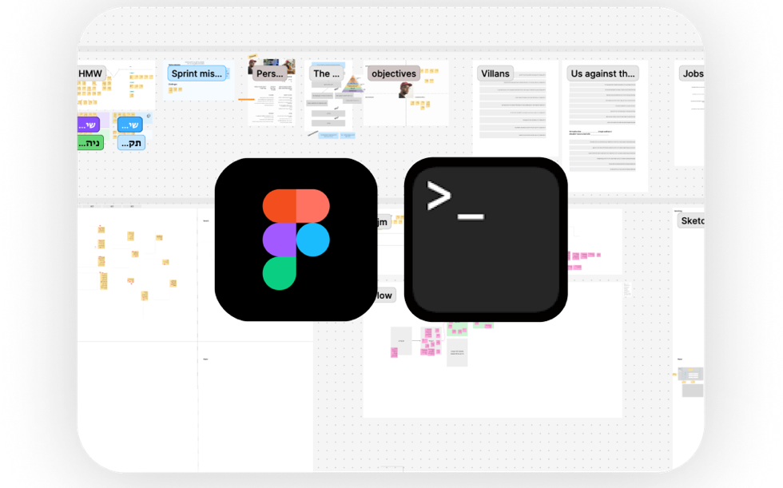
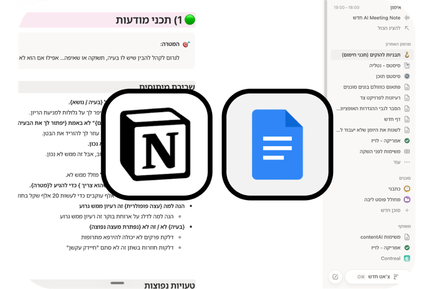
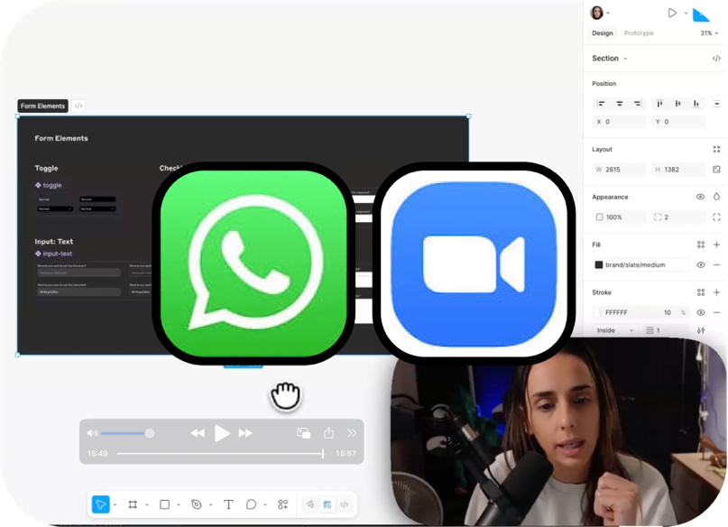
Skills
01
USER RESEARCH
personas, interviews, journey maps
02
COMPETITIVE ANALYSIS
benchmark rivals, find the gaps
03
INFORMATION ARCHITECTURE
structure, navigation, taxonomy
04
HEURISTIC EVALUATION
Nielsen's 10 heuristics
05
USABILITY TESTING
test plans, scenarios, tasks
 autonomy
autonomy
 loop
loop
 judgment
judgment
 memory
memory
-
01
An agent must have at least one of these traits: autonomy, a loop, judgment, or memory.
- 02
- 03
- 04
- 05
DON'T PANIC. BUILD.
project structure
project-name/
├── agent/
│ ├── researcher.md
│ ├── designer.md
│ └── reviewer.md
└── skills/ …
AN AGENT YAY!
won't do what I say
MISSION
PERSONA
HMW
jtbd
ujm
ui hacking
UJM-WANTED
Analyse
Scout
Synthesise
-
01
An agent must have at least one of these traits: autonomy, a loop, judgment, or memory.
-
02
One cognitive task only.
- 03
- 04
- 05
MISSION
PERSONA
HMW
jtbd
ujm
ui hacking
UJM-WANTED
Analyse
Ross
knowledge basepersonaPRD
MISSION
PERSONA
HMW
jtbd
ujm
ui hacking
UJM-WANTED
Scout
Emily
MCP MOBBINsearchdecide
MISSION
PERSONA
HMW
jtbd
ujm
ui hacking
UJM-WANTED
Synthesise
Rachel
idea, data, resourcessumupmerge
JUST LIKE IN A RELAY RACE.
MISSION
PERSONA
HMW
jtbd
ujm
ui hacking
UJM-WANTED
Ross
Emily
Rachel
-
01
An agent must have at least one of these traits: autonomy, a loop, judgment, or memory.
-
02
One cognitive task only.
-
03
Each agent passes to the next only what's needed — to improve performance and cost.
- 04
- 05
good enough?
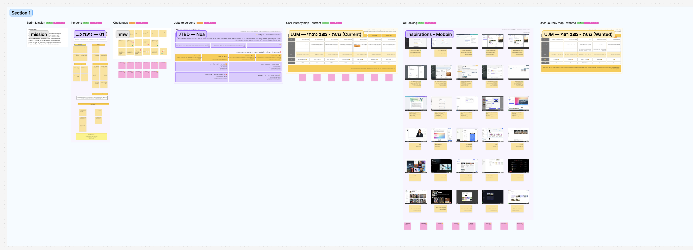
Some days you're up, some days you're down.
Tag every answer
When it's sure, it tags the answer Verified. When it's guessing, it tags it inferred. So you always know where to apply your own judgment.
Verified
inferred
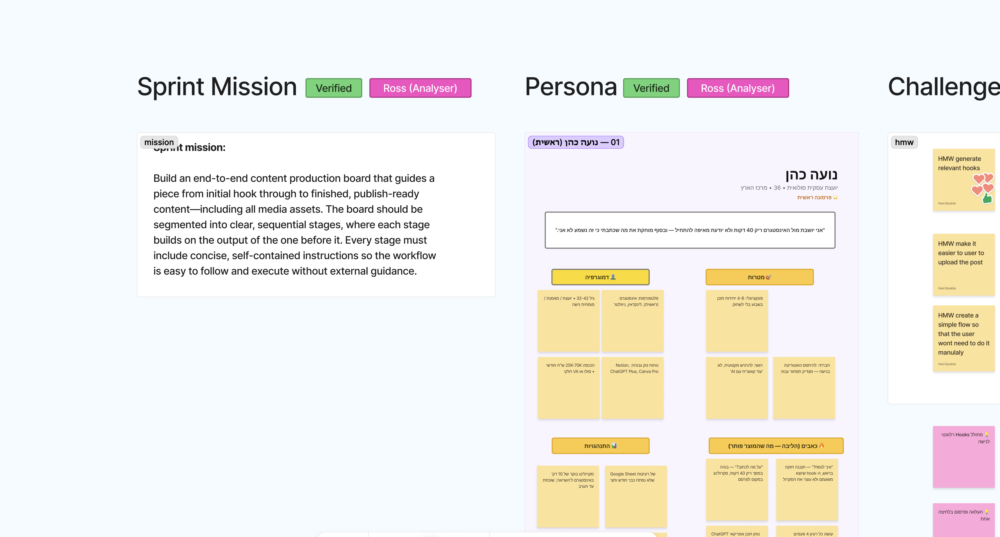
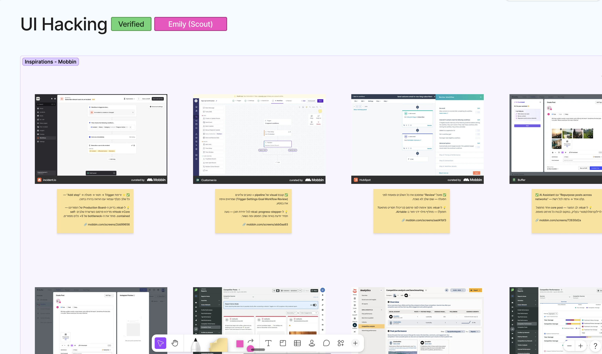
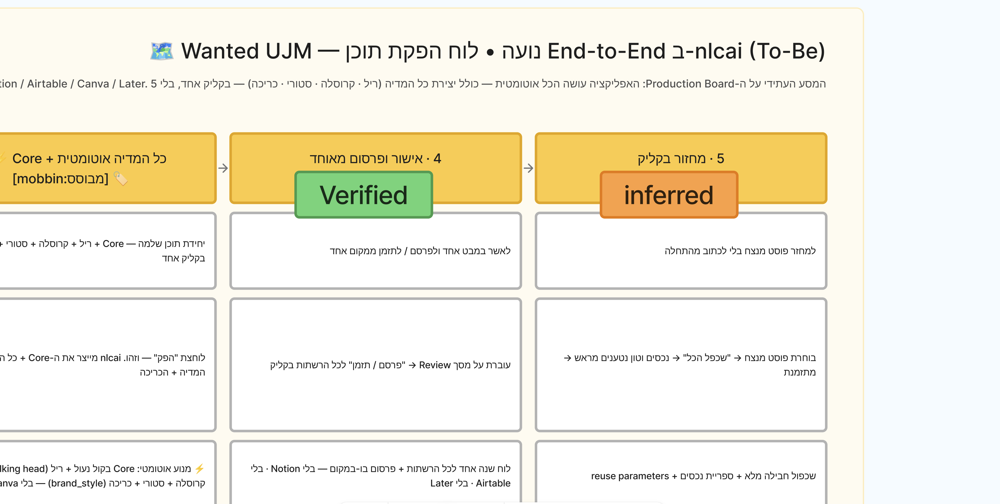
-
01
An agent must have at least one of these traits: autonomy, a loop, judgment, or memory.
-
02
One cognitive task only.
-
03
Each agent passes to the next only what's needed — to improve performance and cost.
-
04
Always tag what's grounded vs. a hypothesis or conclusion — to keep the process transparent.
- 05
feature ideation
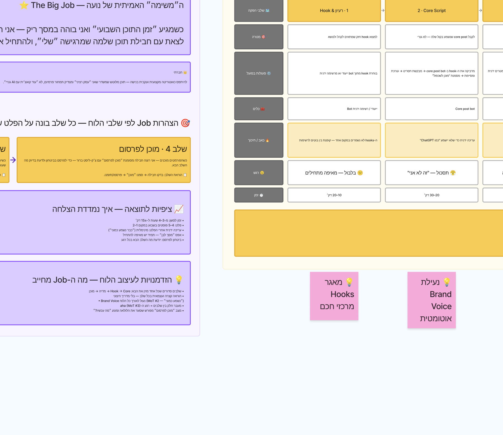
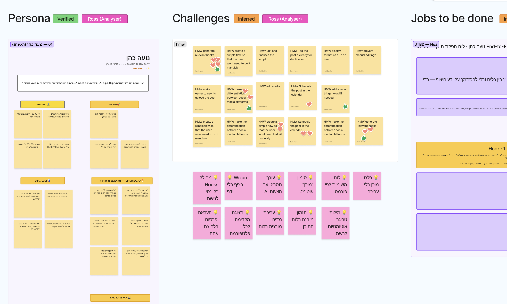
MISSION
PERSONA
HMW
jtbd
ujm
ui hacking
UJM-WANTED
Ross
Emily
Rachel
Mona
-
01
An agent must have at least one of these traits: autonomy, a loop, judgment, or memory.
-
02
One cognitive task only.
-
03
Each agent passes to the next only what's needed — to improve performance and cost.
-
04
Always tag what's grounded vs. a hypothesis or conclusion — to keep the process transparent.
-
05
Add a fresh-eyes agent — one carrying none of its own assumptions, so it comes to the judgment clean.
MISSION
PERSONA
HMW
jtbd
ujm
ui hacking
UJM-WANTED
Orchestrator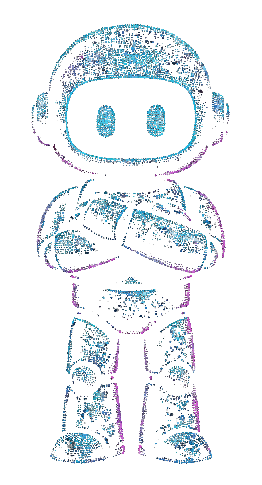
MEET PHEBE.
Phebe is speaking…
Some days you're up, some days you're down.
THE EDGE RUNS ON CONTEXT.
No designer could ever read through all of this before every single task.
Slack
Emails
Zoom transcripts
Notion
Jira
Confluence
Monday
Code history
Core identity
WhatsApp
Figma
Google Drive
Linear
GitHub PRs
Git commits
Calendar
Loom
Support tickets
Analytics
Mixpanel
CRM
Salesforce
PRDs & specs
Design system
Roadmap
User research
Brand guidelines
Meeting notes
Gong
Miro

SlackMS TeamsDiscord
ZoomGoogle MeetGmail
OutlookWhatsAppTelegram
NotionConfluenceGoogle Docs
Google DriveSheetsSlides
DropboxOneDriveSharePoint
CodaGuruWiki
JiraLinearAsana
MondayTrelloClickUp
AirtableProductboardAha!
ShortcutCanny
FigmaFigJamSketch
Adobe XDMiroWhimsical
ZeplinFramerStorybook
InVisionAbstractLottie
Design systemStyle guideBrand guidelines
DovetailMazeUserTesting
Optimal WorkshopHotjarFullStory
LookbackUser research
GitHubGitLabBitbucket
Git commitsPull requestsIssues
Code historyJenkinsCircleCI
VercelNetlifyDocker
Kubernetes
Google AnalyticsMixpanelAmplitude
HeapPendoSegment
LookerTableauMetabase
Power BIBigQuerySnowflake
dbtRedshiftPostgres
SQL / DBDashboards
SalesforceHubSpotPipedrive
MarketoMailchimpIntercom
DriftGoogle AdsMeta Ads
LinkedIn
ZendeskFreshdeskHelp Scout
GongChorusSupport tickets
OtterFirefliesGranola
LoomCalendarMeeting notes
App Store reviewsPlay Store reviewsSurveys
TypeformNPSChangelog
StripeQuickBooksWorkday
BambooHRGreenhouseLever
SentryDatadogPagerDuty
GrafanaKibanaLogs
Core identityRoadmapPRDs & specs
Customer callsStandupsHelp center
AGENTS AT THE EDGES.

YOU
the decision